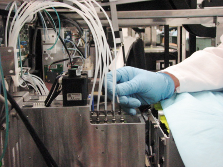
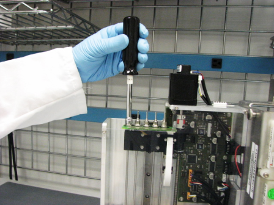
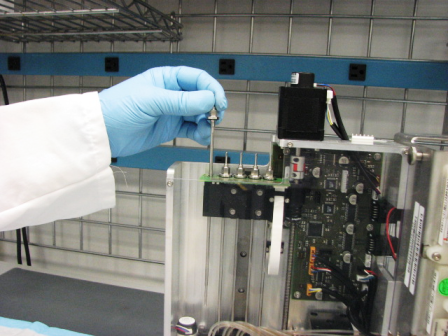
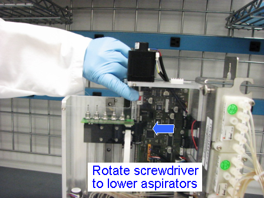
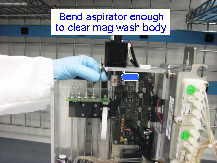
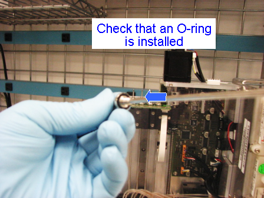
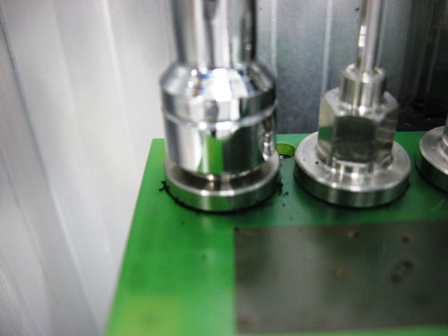
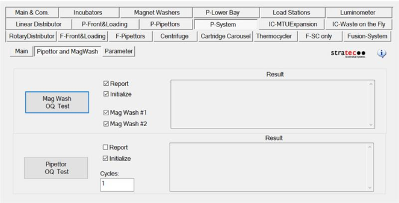

Parts and Materials Required
- Nut driver, 7 mm
- Small piece of sandpaper or emery cloth
- MAGWASH, ASPIRATOR
- Replacement O-ring (as required)
Time Required
- 15–30 minutes

|
Note—This procedure can be performed without removing the Magnetic Wash module. |
Refer to the section on testing aspirators to determine if an aspirator requires replacement.
Removal Procedure
- Put on proper PPE.
- Before attempting to remove the aspirators, use Service Software to strip tips from the aspirators.
If aspirators are not at the top of the Magnetic Wash, use Service Software to initialize the Magnetic Wash and bring the aspirators to the home position. - Turn off the Panther System.

Wear clean nitrile gloves while performing the following procedures.  Disconnect the vacuum line tube that connects the Vacuum Manifold to the aspirator you wish to remove. If the line is stuck to the aspirator, twist to free it and pull straight up. A small piece of sandpaper or emery cloth may help to grip the lineof the tube.
Disconnect the vacuum line tube that connects the Vacuum Manifold to the aspirator you wish to remove. If the line is stuck to the aspirator, twist to free it and pull straight up. A small piece of sandpaper or emery cloth may help to grip the lineof the tube.
Note—Aspirators are numbered 1 through 5, starting at the rear of the Magnetic Wash module. - Aspirators 2 through 5 can be easily accessed when the Magnetic Wash is in the home position. After removing the vacuum line, unscrew the aspirator from the aspirator drive block using a 7 mm nut driver or other appropriate tool, and pull straight up.


- Aspirator 1 is slightly blocked by the body of the Magnetic Wash when it is in the home position. The aspirator drive block should be moved down two inches to allow for the easy removal of the aspirator. This can be accomplished by rotating the drive screw by hand. Aspirator 1 can now be removed in the same manner as 2 through 5. You may still need to flex the aspirator slightly to clear the body of the Magnetic Wash.



Replacement Procedure
|
|
Wear clean nitrile gloves while performing the following procedures. |
- Check to be sure that the new aspirator has a proper O-ring installed. If an O-ring is not already installed, install a new one.

- Aspirators 2 through 5 can be easily installed with the Magnetic Wash in the home position. Aspirator 1 will require the aspirator drive block to be lowered a few inches, as described in the previous section.
- Before installing the new aspirators, quickly clean the top of the PCB and make sure there are no pieces of debris that could prevent a solid contact. Poor electrical contact will cause incorrect level sense and tip-strip reporting errors.
- Insert the aspirator into the aspirator drive block and firmly tighten.

- Reinstall the vacuum lines by pressing them down onto the aspirators until they bottom out on the nut. A small piece of sandpaper may assist in getting a good grip on the plastic line.
- Be sure that all vacuum and power lines are routed so that they will not interfere with the Pipettor, Output Queue, or other modules during operation.
Alignment/Calibration
Verification
- Check for oil and wash fluid leaks at all connections.
- In Service Software, perform a MagWash OQ test.
- Click on the System tab.
- Select the Pipettor and MagWash tab.
- Check the Report, Initialize, MagWash #1, and MagWash #2 boxes.
- Click on the Mag Wash OQ Test button.

- Perform the Mag Wash OQ Test. If automatic test fails, perform the Magnetic Wash Dispense and Process Control Verification.
- Prime Operation of pumping fluid through tubing to ensure proper and consistent fluid delivery (remove air from the tubing, etc.). the system (see the Panther System Operator's Manual).
 button at the top of the page to send feedback, comments, or change requests.
button at the top of the page to send feedback, comments, or change requests.{kind=link}